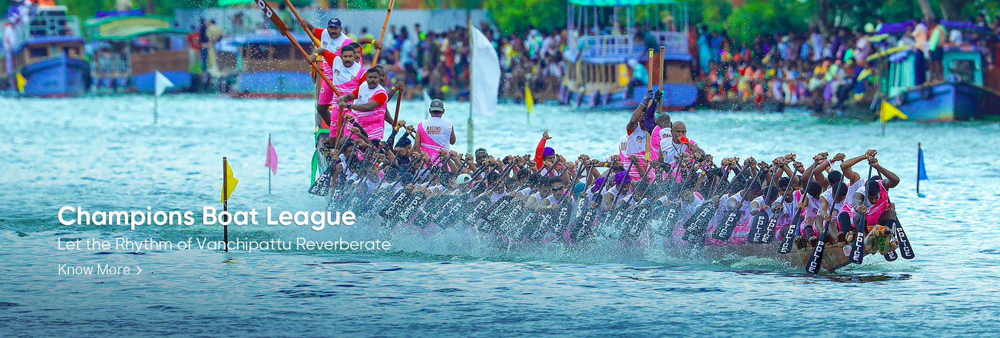

Kerala, a state situated on the tropical Malabar Coast of southwestern India, is one of the most popular tourist destinations in the country. Named as one of the ten paradises of the world by National Geographic Traveler, Kerala is famous especially for its ecotourism initiatives. Its unique culture and traditions, coupled with its varied demography, have made Kerala one of the most popular tourist destinations in the world. Growing at a rate of 13.31%, the tourism industry is a major contributor to the state's economy. Until the early 1980s, Kerala was a relatively unknown destination, with most tourism circuits concentrated around the north of the country. Aggressive marketing campaigns launched by the Kerala Tourism Development Corporation the government agency that oversees tourism prospects of the state laid the foundation for the growth of the tourism industry. In the decades that followed. Kerala Tourism was able to transform itself into one of the niche holiday destinations in India. The tag line Kerala- God's Own Country was adopted in its tourism promotions and became a global superbrand. Kerala is regarded as one of the destinations with the highest brand recall. In 2010, Kerala attracted 0.66 million foreign tourist arrivals. Kerala is an established destination for both domestic as well as foreign tourists. Kerala is well known for her beaches, backwaters, mountain ranges and wildlife sanctuaries. Other popular attractions in the state include the beaches at Kovalam, Kappad, Cherai and Varkala; backwater tourism and lake resorts around Vembanad Lake, Kumarakom and Alapuzha; hill stations and resorts at Munnar, Wayanad, Nelliampathi, Vagamon and Ponmudi; and national parks and wildlife sanctuaries at Periyar and Eravikulam National Park. The "backwaters" region-an extensive network of interlocking rivers, lakes, and canals that centre on Alleppey, Kumarakom, and Punnamada also see heavy tourist traffic. Heritage sites, such as the Padmanabhapuram Palace, Hill Palace, and Mattancherry Palace, are also visited. The city of Kochi ranks first in the total number of international and domestic tourists in Kerala. To further promote tourism in Kerala, the Grand Kerala Shopping Festival was started by the Government of Kerala in 2007. Since then it has been held every year during the December January period. The state's tourism agenda promotes ecologically sustained tourism, which focuses on the local culture, wilderness adventures, volunteering and personal growth of the local population. Efforts are taken to minimise the adverse effects of traditional tourism
Kerala is renowned for some of its unique cultural and geographical characteristics. The practices and traditions handed down from generation to generation, alongside some of the natural wonders that we have been blessed with have attracted people to this land for centuries. From the ancient healthcare system ofAyurveda to our picturesque hill stations and diverse wildlife, we provide you with links to access a wide range of our specialities. We believe it is our duty to share these gifts with the rest of the world. These specialities of God’s Own Country that are linked below shall be useful in narrowing the search and guiding you to your preferred destination along with providing the requisite information.
Welocom to the official website of Eco Adventure Tourism in Kerala. A trip to swooninigly picturesque places that are also silent, serene, slow-moving is what travelers to the kerala always looks for is there.
Explore the tourist destinations and things to do in Kollam and Thiruvananthapuram. Check out the e-brochure and start planning your next trip to South Kerala.

RT Mission is the nodal agency formed by the Government of Kerala to spread and implement the ideologies and initiatives of Responsible Tourism all over the State.
Welcome to Kannur, a city that boasts of a vibrant tapestry of history, culture, tradition and natural beauty

An exclusive website to know what is Yoga and how Yoga can change your life

Kerala has birthed and nurtured a plethora of art forms over a thousand years. Our shores have watched them evolve and flourish in various shapes and forms.

Kerala brings to you a magical tryst with nature through its various hills and hill stations. A majority of these places in Kerala are situated on the windward side of the majestic Western Ghats. Enjoy the long chain of lush mist-clad hill stations of Kerala and explore the various plantations, wildlife, flora and fauna that comprise an integral part of this experience.

There are a number of popular wildlife sanctuaries in Kerala housing exotic and rare species of flora and fauna. Nestled in the elaborate forest of the majestic Western Ghats or Sahyadri Ranges in Kerala are fourteen wildlife sanctuaries and two tiger reserves. Kerala also has six national parks containing protected and endangered species like the Indian Sloth-Bear, Lion-Tailed Macaque, Indian Bison, Bengal Tiger, Nilgiri Tahr etc.

Kerala does not have incessant rains that stop all activity. It rains for a few hours with sunny interludes. Occasionally the rains might stretch on for a few days but sunshine is never far away. These golden interludes provide an equilibrium to life's natural flow Kerala has mainly two rainy seasons. The Southwest Monsoon that arrives in the month of June is called Edavappathy, as it comes in the middle of the month of Edavam on the Malayalam Calendar.

A comprehensive understanding of Ayurveda requires a detailed look at its long history, from its source to the various interpretations it has been subjected to, through the centuries. The original verses of Ayurveda are said to be derived from the consciousness of Lord Brahma the Creator, and carefully internalized by his disciples. These were passed down among the Gods, until they eventually reached the three Great Sages - Dhanwantari (in his Divodasa avatar), Bharadwaja, and Kashyapa - who setup different schools of treatment and thought on Earth.

Kerala is home to a number of spectacular beaches that will take your breath away. As Kerala is a coastal state, some of the most popular tourist destinations in Kerala are beaches like Kovalam, Varkala, Chowara, Chavakkad, Nattika, Cherai, Kizhunna, Poovar and the list goes on and on. The Kerala coast is replete with exotic resorts and hotels where travellers can spend their time sunbathing, swimming or simply enjoying the stunning view.

Kalliasseri in Kannur, bell metal making of Kunnimangalam, Theyyam performances, pottery making, handicrafts and weaving villages are different aspects of Kerala that can get explored through the RT Mission. Come, soak yourselves in the festive spirits and rustic terrains of Kerala!
Museums are storehouses of not just our history but also a treasure trove of information regarding the various events and mechanisms that led us to this point in time. They have with them teachings, information and even warnings at times which are of great significance to the future generations. We can learn and observe from those who carved out a place in history.

Now start exploring God's Own Country in the comfort of a luxury Caravan! Worry no more about your stay while planning your trip to Kerala. We are all set to welcome you for a caravanning experience. Three decades after the historic houseboat experience, Kerala Tourism is ready to bestow you a new, safe, customized and closest-to-nature travel experience. Keravan Kerala is developed on a Public-private partnership mode with private investors, tour operators and local communities being key stakeholders.

Spices have always played an integral part of Kerala's history. Our food is an example of the very same and we have offerings for people from all over the world. Be it famous international restaurant chains or local eateries, we have everything a foodie could ask for prepared with that special Kerala taste to it. The cuisine here caters to vegetarians and non-vegetarians alike. Let the flavours of our past and our future take you on a delightful journey.
Kerala is a popular destination for both domestic as well as foreign tourists. Kerala is well known for its beaches, backwaters in Alappuzha and Kollam, mountain ranges and wildlife sanctuaries. Other popular attractions in the state include the beaches at Kovalam, Muzhappilangad, Bekal and Kappad; backwater tourism and lake resorts around Ashtamudi Lake, Kollam; hill stations and resorts at Munnar, Wayanad, Nelliampathi, Vagamon and Ponmudi; and national parks and wildlife sanctuaries at Wayanad, Periyar, Parambikulam, Silent Valley National Park and Eravikulam National Park. The "backwaters" region—an extensive network of interlocking rivers, lakes, and canals that centre on Vembanad Lake, also see heavy tourist traffic. Heritage sites, such as the Padmanabhapuram Palace, Hill Palace, and Mattancherry Palace, are also visited. To further promote tourism in Kerala, the Grand Kerala Shopping Festival was started by the Government of Kerala in 2007. Since then it has been held every year during the December–January period.
The district has famous tourist centres, including the international fame BEKAL FORT & BEACH. There are also places which can be converted to attract the tourists. Kasaragod is known as the Land of Gods, Forts, Rivers, Beautiful hills and lengthy sandy beaches.


Kannur is most renowned for the Theyyam performances in its temples. This magnificent art form plays an integral part in the culture of this Northern Kerala district. Formerly known as Cannanore, Marco Polo christened it a ‘Great Emporium Of Spice Trade’. Kannur has, since time immemorial, been hailed as an influential sea port. Legend has it that it had interactions and trade relations with the rest of the world since the time of King Solomon to the Greeks, Arabs and Romans. It has a plethora of forts, temples, beaches and wildlife sanctuaries that regularly attract visitors. Major festivals and events are held throughout the year and this is among the best places in Kerala to spend your vacation in.


Adorning the northern hills of Kerala is the beautiful district of Wayanad, maintained by the District Tourism Promotion Council, Wayanad. This area is famous for its large amount of camping and trekking trails, breathtaking waterfalls, caves, bird-watching sites, flora, fauna and an overall plethora of magnificent sights. This area has been a tourist favourite over the years. People are especially delighted by the range of exotic products including spices, coffee, tea, bamboo products, honey and herbal plants available here. Kanthanpara Waterfalls is one hotspot in Wayanad that allures tourists from all over the world. Apart from these magnificent falls, Wayanad calls you to experience the stunning beauty of Karapuzha Dam, Pookode & Karlad Lake as well. If you are an adventure seeker, then Cheengari Rock Adventure Center is a must-visit place for you. Another must-visit place in Wayanad is the Edakkal Caves. The caves are two natural rock formations believed to have been formed by a large split in a huge rock. The carvings inside are extremely beautiful.


The city of Calicut, the Anglicized form of Kozhikode, is the headquarters of the district. The district of Kozhikode is 38.25% urban and is bordered by Kannur district to the North, Wayanad to the East, and Malappuram to the South. To the West, lies the mighty Arabian Sea.